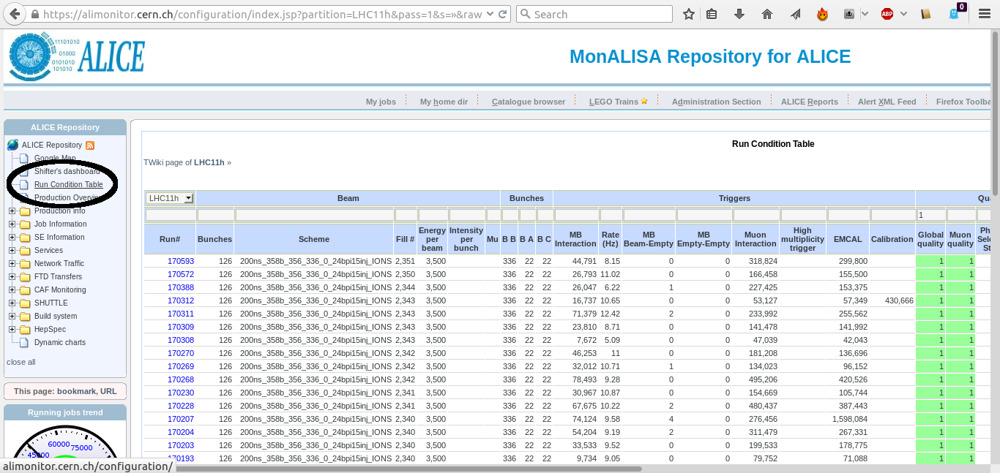
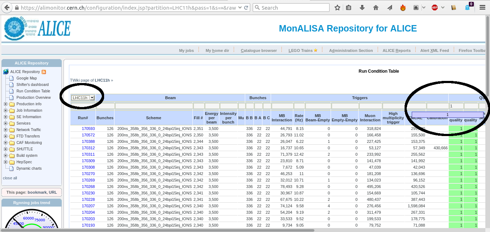
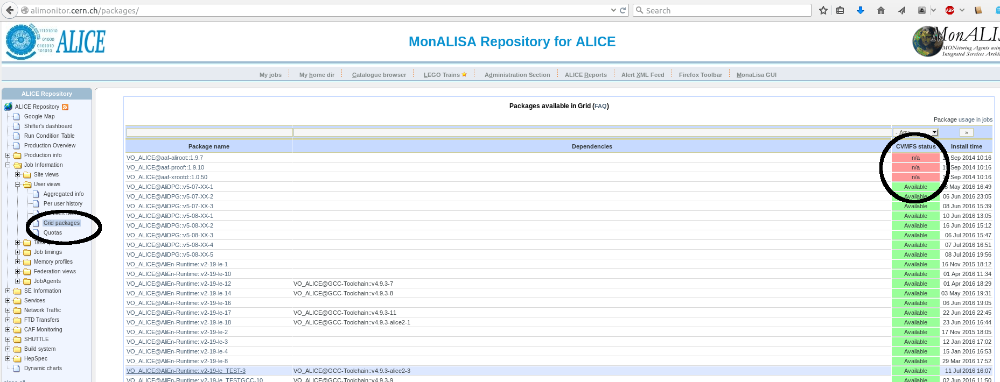
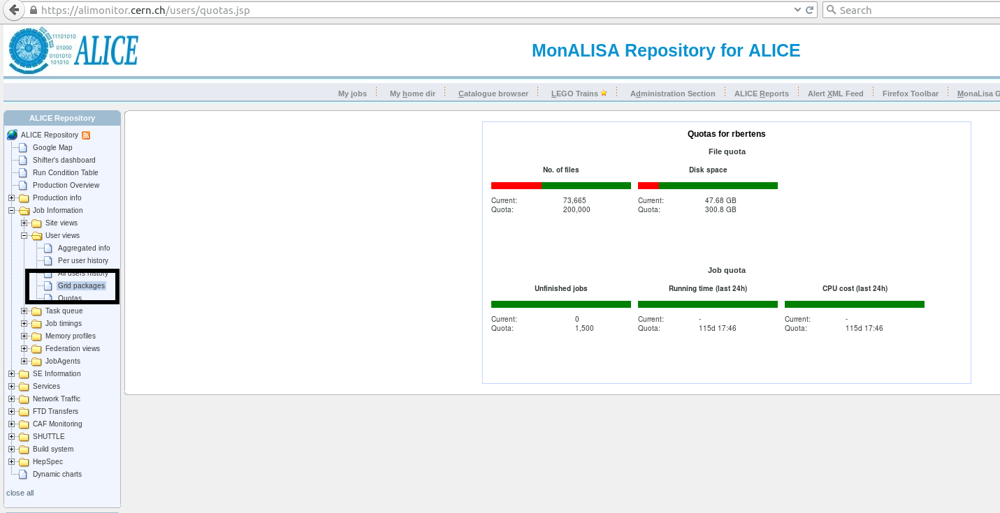

MonALISA - the ALICE Grid monitoring toolset
ALICE uses MonALISA (Monitoring Agents using a Large Integrated Services Architecture) for monitoring and control of its Gird operations. The AliMonitor webpage, that we have seen in previous sections, provides us with access to the MonALISA services. In this section, we will cover some of these services.
VO registration
For full access to all MonALISA serivces, make sure that you have a valid certificate and ALICE VO registration!
Run numbers
In the previous section, we have seen that data that are stored are identified by their run number. If you want to look up which run numbers correspond to a given data taking period, go to ALIMONITOR and click on the tab 'Run Condition Table' (RCT).

A large table is shown - you can select a data taking period from the drop down menu at the top left corner of the table. As soon as you select a data taking period, the corresponding list of run numbers is displayed in the table.

To ensure that detector systems that you need to use in your analysis were functioning properly, you can check quality flags for all detector subsystems in the columns on the right-hand side of the table. The number '1' means that data taking was successful; to only display run numbers for which data quality is guaranteed for a given sub detector, type a '1' in the field of the first row of the table that corresponds to said detector (see the circle on the top right of the above picture).
If you scroll down, to the bottom of the table, you will see a button labeled: 'Show list of runs'. Clicking this button will open a pop-up window which lists the run numbers that are displayed in the table as a list of comma separated numbers. You can now easily copy these numbers into your steering macro, and add these run numbers to the analysis plugin.
Which data format to take?
You might note that, for all runs, data is stored in two distinct formats
- AliESDs.root: event summary data
- AliAOD.root: analysis object data in various passes.
ESD files contain full information about events, AOD files contain a subset of information that has been selected for physics analysis.
- unless otherwise specified, use is discouraged as data are very large
- AOD files contain information necessary for physics analysis and is the preferred format
- AOD files contain pre filtered collections of tracks, to be selected via their filterbit. Always apply a filterbit selection when running on AODs, to avoid double counting of tracks!
When multiple passes are available for a data set, this means that the data has been reconstructed more than once, with slightly different approaches. As a rule-of-thumb: take the latest pass, but discuss this within your working group!
Available packages
The AliMonitor webpage can be used to check which software packages are accessible on the Grid nodes. In the menu on the left-hand side of the page, click on 'Job information', then on 'User views', then on 'Grid packages'. A large table will load, if the CVMFS status is listed as 'available', a certain software package is available on Grid. If it's listed as n/a, it is (probably) archived, and cannot be selected for analysis.
Keep in mind: when specifying a version of the software stack to be used, to only call ‘SetAliPhysicsVersion(“..”)’ in your steering macro. The right dependencies are automatically resolved.  Daily tags (AN) of AliPhysics are a snapshot of all code that is in the central repository at 16h Geneva time. The daily tacks are usually available on Grid in about two hours after the tagging.
Run quota - how many jobs can you run?
We have to share computing resources, so the number of jobs that you can run is not infinite. To check your quotas, which limit both how many jobs you can run, how much CPU hours they can consume, and how much diskspace your output files take up, click at the menu on the left-hand side of the AliMonotir page on 'Job information', then on 'User views' and then on 'Quotas.

You will see the five job activity quantifiers that apply for all users
- the number of files that you have currently stored
- the disk space that the files take up
- the number of unfinished jobs that you have in the job queue
- the running time of your jobs, integrated over the last 24 hours
- the CPU cost of your jobs, integrated over the last 24 hours
If you are over (one of the) quota, i.e. one of the bars is completely red, you cannot submit jobs. In case of being over the file quota, you have to remove files from your alien space. Job quota just require a bit of waiting.
Be patient, when you are over your quota. Not all quota are refreshed instantaneously, it can sometimes take up to 12 hours before your quota are refreshed.